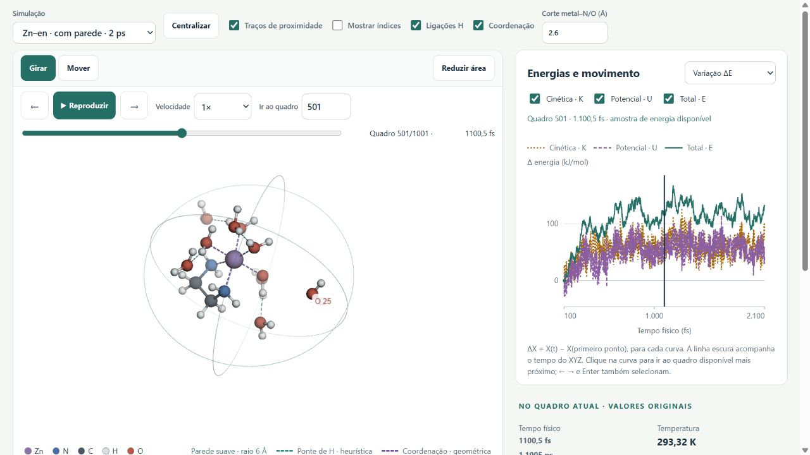

MINICURSO 04 QUÍMICA EM MOVIMENTO
Dinâmica molecular
com ORCA.
Do input à interpretação: simule, veja os átomos se moverem e descubra o que a trajetória conta.
Henrique de Castro Silva Junior
Virginia Camila Rufino Ferreira
Prepare o computador ↗
WSL2 + Ubuntu, ORCA e o primeiro teste.
Abra os exercícios →
Inputs para copiar e resultados para comparar.
Entre no laboratório →
Movimento, energias, temperatura e medidas geométricas.
SEUS RESULTADOS, EXPLORADOS
Veja. Meça.
Interprete.
Carregue os arquivos do ORCA ou abra uma referência da aula. Relacione o movimento da molécula às curvas e às medidas.
- 01 Trajetória 3D e contatos tracejados
- 02 Energias e temperatura sincronizadas
- 03 Distâncias, ângulos e diedros
Sem conta ou instalação. Seus arquivos são lidos localmente.

DURANTE A AULA · CINCO BLOCOS
Uma pergunta química
em cada etapa.
Execute com XTB2, interprete no laboratório e compare com os resultados fornecidos. Comece pela trajetória DFT pronta da água; depois investigue com XTB2.
Uma água.
Depois, duas.
Meça a água isolada, relacione movimento, energia e temperatura e passe à ligação H no dímero.
Começar pela água ↗A energia avisa.
Vamos corrigir.
Comece pelo etanol estável, reconheça a instabilidade e corrija o passo de integração.
Investigar o timestep ↗Aquecer.
Explorar. Resfriar.
Programe cinco etapas no mesmo input. Relacione temperatura e orientação da hidroxila.
Programar as etapas ↗Perto do metal.
Mas coordenado?
Use SOLVATOR e uma parede; depois identifique o quelato e duas águas deslocadas em uma trajetória com aproximação inicial guiada.
Explorar solvente e coordenação ↗Onde está
o próton?
Sete átomos, duas distâncias O–H e um próton compartilhado. Distinga deslocamento e retorno.
Acompanhar o próton ↗Depois da aula: opcionais e referências
Continue no seu ritmo. Estes exemplos não fazem parte da sequência obrigatória.
Consultar o guia de parâmetros %md ↗ · Todos os opcionais e controles → · Horário completo →
MATERIAIS À MÃO
Continue explorando.
Leve os inputs, as estruturas, os resultados e o laboratório. Os cálculos exigem ORCA instalado.